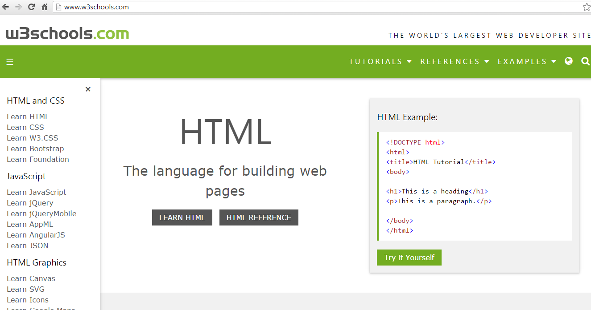

W3Schools adalah situs web developer informasi, dengan tutorial dan referensi yang berkaitan dengan topik pengembangan web seperti HTML, CSS, JavaScript, PHP, SQL, dan JQuery.
Situs ini mendapatkan namanya dari singkatan untuk World Wide Web; W3 adalah numeronym dari WWW. W3Schools tidak berafiliasi dengan W3C.
Hal ini dibuat dan dimiliki oleh Refsnes data, pengembangan perangkat lunak milik keluarga Norwegia dan perusahaan konsultan. Situs ini menyediakan panduan referensi yang mencakup banyak aspek pemrograman web, termasuk teknologi seperti HTML, XHTML, CSS, XML, JavaScript, PHP, ASP, SQL dll.
W3Schools menyediakan ribuan contoh kode. Dengan menggunakan editor online yang disediakan, pembaca dapat mengedit contoh dan mengeksekusi kode eksperimental. Dan di bawah ini bentuk websitenya
